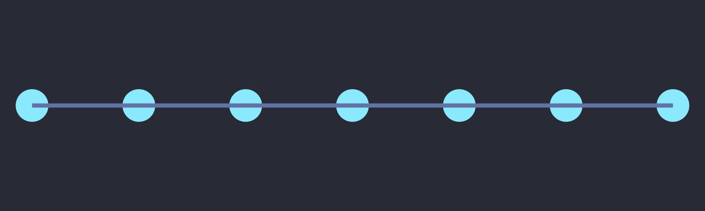
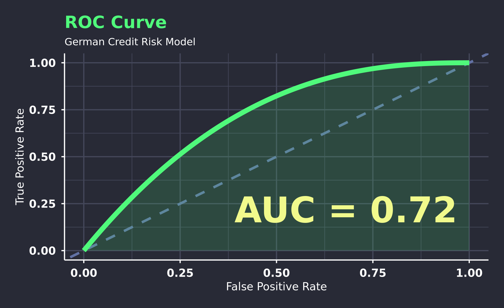
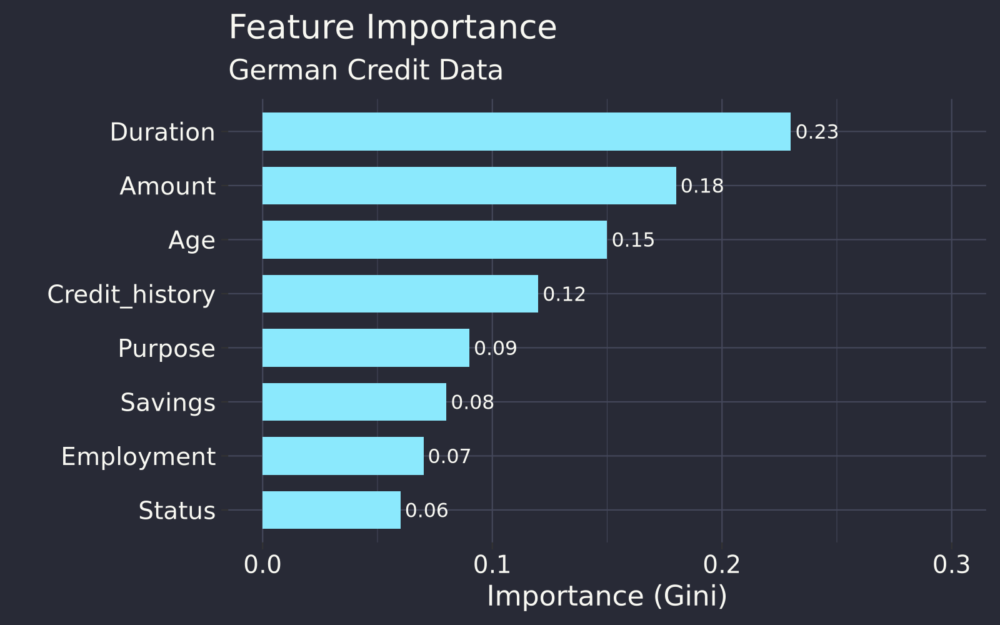

%%{init: {'theme': 'base', 'themeVariables': { 'fontSize': '26px', 'fontFamily': 'Inter'}}}%%
graph LR
A["Dataset
100%"] --> B["Treino
80%"]
A --> C["Teste
20%"]
B --> D["training(split)"]
C --> E["testing(split)"]
style A fill:#44475a,color:#f8f8f2
style B fill:#8be9fd,color:#282a36
style C fill:#ff5555,color:#f8f8f2
style D fill:#8be9fd,color:#282a36
style E fill:#ff5555,color:#f8f8f2
strata = Target — amostragem estratificada: mantém proporção das classesprop = 0.8 — 80% treino, 20% testeset.seed(42) — reprodutibilidade⚠️ Por que usar strata?
WARNING: Informacao do teste vaza para o treino = resultados falsamente otimistas!
❌ ERRADO — Data Leakage:
✅ CERTO — Sem Leakage:
Regra: Split → Pré-processamento → Treino
Por que k-fold?
Single split varia muito. k-fold reduz variância na estimativa.
%%{init: {'theme': 'dark', 'themeVariables': { 'fontSize': '28px', 'fontFamily': 'Inter'}}}%%
graph TD
subgraph Fold 1
T1["🏋️"] --- T1_2["🏋️"] --> V1["✅"]
end
subgraph Fold 2
T2["🏋️"] --> V2["✅"] --- T2_2["🏋️"]
end
subgraph Fold 3
V3["✅"] --- T3["🏋️"] --- T3_2["🏋️"]
end
%% Position 1 (left block in each fold)
style T1 fill:#ffb86c,color:#282a36
style T2 fill:#ffb86c,color:#282a36
style V3 fill:#ffb86c,color:#282a36
%% Position 2 (middle block)
style T1_2 fill:#8be9fd,color:#282a36
style V2 fill:#8be9fd,color:#282a36
style T3 fill:#8be9fd,color:#282a36
%% Position 3 (right block)
style V1 fill:#bd93f9,color:#282a36
style T2_2 fill:#bd93f9,color:#282a36
style T3_2 fill:#bd93f9,color:#282a36
%%{init: {'theme': 'base', 'themeVariables': { 'fontSize': '24px', 'fontFamily': 'Inter'}}}%%
graph TD
D["📊 Dados"] --> T1["🌳 Árvore 1"]
D --> T2["🌳 Árvore 2"]
D --> T3["🌳 ... N"]
T1 --> V["🗳️ Votação"]
T2 --> V
T3 --> V
V --> P["🎯 Predição Final"]
style T1 fill:#50fa7b,color:#282a36
style T2 fill:#50fa7b,color:#282a36
style T3 fill:#50fa7b,color:#282a36
style V fill:#f1fa8c,color:#282a36
style P fill:#8be9fd,color:#282a36
| Métrica | Fórmula | Interpretação |
|---|---|---|
| Accuracy | TP+TN / Total | % total de acertos |
| Precision | TP / (TP+FP) | Das classificadas risco, quantas eram? |
| Recall | TP / (TP+FN) | Das que eram risco, quantas encontrou? |
| F1 Score | 2×P×R / (P+R) | Harmônico entre precision e recall |
| AUC-ROC | Área sob curva ROC | Probabilidade de classificar positivo maior que negativo |
💡 as.factor(): yarstick exige que truth seja fator — classe positiva deve ser o segundo nível para event_level = "second"
⚠️ Sempre no teste — nunca no treino!
O que é AUC?
Área sob a curva ROC — mede a capacidade discriminativa do modelo.
| AUC | Interpretação |
|---|---|
| = 0.5 | Azar (classificador aleatório) |
| < 0.5 | Invertido (preve ao contrário!) |
| > 0.5 | Bom — mais perto de 1, melhor |
| > 0.9 | Excelente (cuidado com overfitting) |

Pro tip: AUC = 0.5 significa que o modelo não sabe distinguir as classes. AUC > 0.8 geralmente é considerado bom.

Exemplo German Credit:
Duration — duração do créditoAmount — valor do créditoAge — idadePara que serve?
Nem toda feature ajuda — escolher bem melhora modelo e interpretabilidade.
Métodos Estatísticos:
Conhecimento de Domínio:
⚠️ Armadilhas:
🌲 Robustez do RandomForest:
📊 Paramétrico vs Não-Paramétrico:
O que é COMPAS?
Correctional Offender Management Profiling for Alternative Sanctions — algoritmo usado na justiça criminal dos EUA para prever reincidência.
Descoberta da ProPublica (2016):
Mesmo controlando para histórico criminal!
Questões para Discussão:
Fairness Metrics: Além de accuracy, usar Precision, Recall e Disparate Impact (razão entre taxas de grupos). Se taxa_negativos/taxa_positivos < 0.8, há possível viés.
Pense antes de responder!
strata = Target no split?
💡 Dica: Reveja os slides de Data Leakage, AUC e Train/Test Split se tiver dúvida!
initial_split() com strata = Targetranger()vip() para interpretar modeloExercício: Complete o pipeline no German Credit Data e analise fairness do modelo!